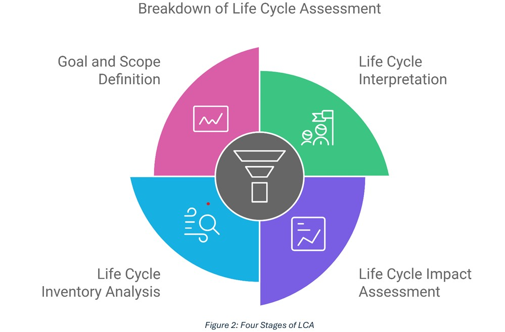
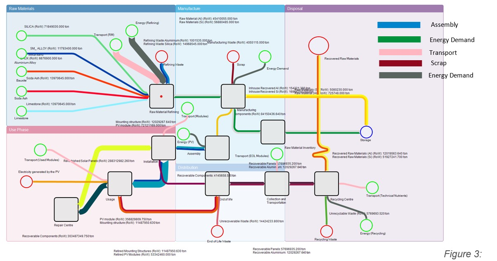
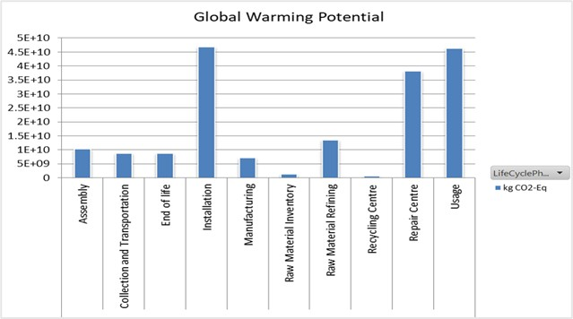

LCA Framework for Photovoltaic Systems
Developing a qualitative framework to facilitate the execution of Life Cycle Assessments for PV Systems
| Institution | Leibniz Universität Hannover — Institute for Sanitary Engineering and Waste Management |
| Programme | M.Sc. Water Resources and Environmental Management (WATENV) |
| Submitted | 15th October 2024 |
| Supervisors | Prof. Dr.-Ing. Habil. Dirk Weichgrebe | M.Sc. Sara Zahedi Nezhad |
| Tools Used | STAN2, Umberto, ISO 14040/14044, SimaPro, Literature Review |
| Collaborators | Kabir Kundapur Sheik, Shivam Aks, Rabeia Malik, Moiz Rao |
Overview
This research project, conducted at the Institute for Sanitary Engineering and Waste Management, Leibniz Universität Hannover, developed a qualitative framework to structure and simplify Life Cycle Assessments (LCA) for Photovoltaic (PV) systems. PV technology is expanding rapidly as a fossil fuel alternative, yet its full environmental impact — from raw material extraction through manufacturing, installation, and end-of-life disposal — remains incompletely understood.
The project followed all four phases of the ISO 14040/14044 LCA standard: Goal and Scope Definition, Life Cycle Inventory Analysis, Life Cycle Impact Assessment, and Life Cycle Interpretation, with a functional unit of 1 kWh of electricity generated.
Material flows were modelled using two complementary tools: STAN2 for detailed material-specific flow analysis tracking goods, aluminium, and silicon across all lifecycle stages; and Umberto for integrated LCA modelling with direct carbon footprint estimation. The study reviewed 10+ existing LCA studies and compared crystalline silicon versus thin-film PV technologies across material utilisation, energy consumption, and emissions.

Key Findings
- Only 25 out of 117 reviewed LCA studies covered the full lifecycle — 92 focused solely on production, revealing a major gap this framework addresses.
- Raw material refining dominates energy demand at 486,730,021,000 kWh — approximately 97% of total process energy, making it the primary target for efficiency improvement.
- GHG emissions range from 22–27 g CO₂-eq/kWh (polycrystalline silicon) to 34.3 g CO₂-eq/kWh (amorphous silicon).
- Installation and usage phases are the dominant GWP contributors across the full lifecycle.
- Umberto outperforms STAN2 for integrated LCA work; STAN2 is better for granular material-specific analysis.
| Process | Energy Demand (kWh) |
|---|---|
| Raw Material Refining | 486,730,021,000 |
| Assembly | 11,265,500,000 |
| Recycling Centre | 6,034,889,872 |
| Manufacturing | 2,075,574,189 |


Conclusion
This project successfully developed a qualitative LCA framework addressing a documented gap — most existing studies neglect end-of-life impacts entirely. Circular economy strategies (repair, reuse, recycling) have significant potential to reduce PV environmental footprints. Standardised methodologies (ISO 14040/14044, PEF Guide) are essential for consistent cross-technology assessment.
The framework directly supports the renewable energy sector's transition toward a circular economy model and is relevant to SDGs 7, 9, 12, and 13.